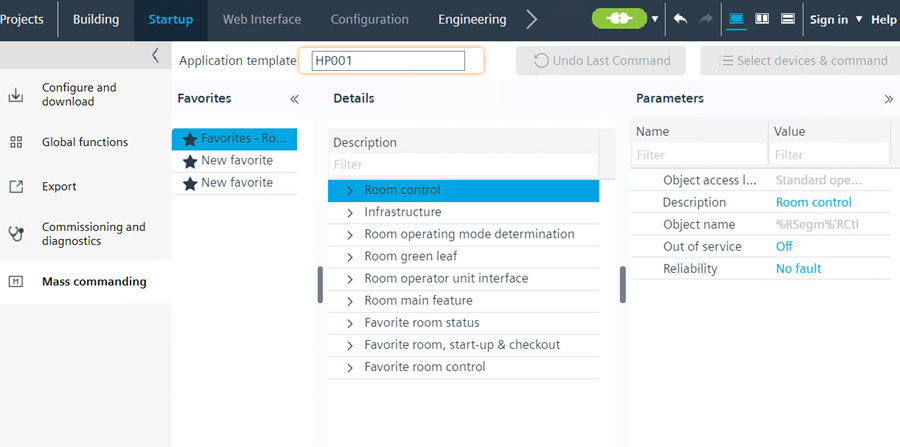
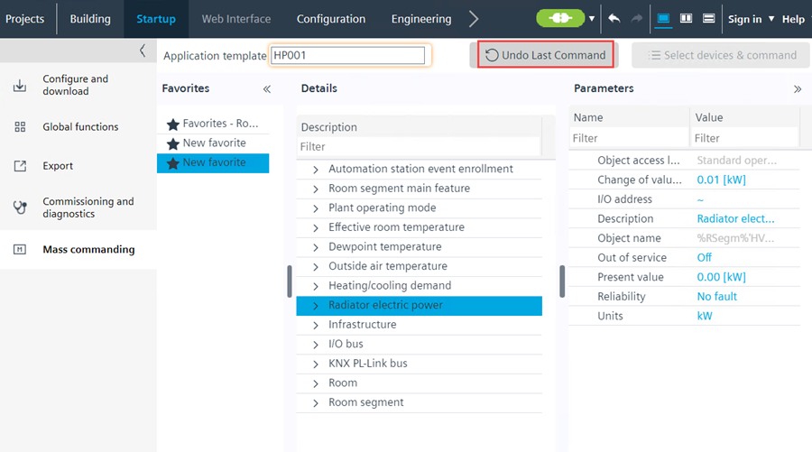

群众指挥
这Mass commanding任务在多个设备上设置参数。例如，将所有房间调整为经济状态。

NOTICE

将错误的设置写入自动化站
多个设备的参数设置后，该动作不可逆。
- Select only automation stations affected by the change.
Set parameters for multiple devices
- The automation stations are online.
- An application template is available in the project; application templates are based on the selected application type, for example, VAV041_H.
- The function can only be applied to application types for related devices such as DXR1, DXR2, Intelligent Valve, and so on.
- Go to Startup.
- Open the Mass Commanding task.
- From drop-down menus, select an application template to view favorites.
- In Favorites pane, select a predefined or own favorite.
- In Details pane, select a device or functionality.
- In Parameters pane, change the parameters.
- Connect to your network device.
Connect and disconnect - Click Select devices & command above the Parameters pane.
- In the new window, select all the devices for the parameter changes.
- Confirm with Command and OK.
- Parameters are set across all selected devices.
Undo the last commanded value using mass commanding
这Undo Last CommandinMass Commanding使用户能够取消之前设置的命令Mass Commanding部分。

- Perform steps given in Mass commanding.
- Open the Mass Commanding task again.
- To change some parameters, click Select devices & command above the Parameters pane.
- In the new window, select all the devices for the parameter changes.
- Confirm with Command and OK.
- Click Undo Last Command.
- The last commanded value is cancelled.
- "Undo mass command executed successfully. The commanded values are restored to last values." message is displayed in the Log viewer and status bar.

这Undo Last Command当您离线、未命令任何对象或命令后切换模板时，按钮将被禁用。